📖 الكتاب المحشّى · العلوم · السادس⭐ نجمات العلوم
السلاسل والشبكات الغذائية وهرم الطاقة
الفصل الخامس: الأنظمة البيئية ومواردها · الصفحات ١٣٦ – ١٤٣
❓ السؤال الأساسي للدرسكيف تنتقل الطاقة بين المخلوقات الحية في النظام البيئي؟
ألوان الحواشي
💡 الزبدة⚖️ انتبهي للفرق🔍 توضيح⚠️ فخ في الاختبار✍️ حلّ سؤال الكتاب
اقرئي القصاصة من الكتاب، ثم حاشيتها تحتها مباشرة.
🐬
أنظر وأتساءل (ص١٣٦): الأسماك الصغيرة غذاء للدلافين، فعلامَ تتغذى الأسماك الصغيرة؟
اضغطي لتري الجواب ▾
تتغذى على مخلوقات حية أصغر منها تعيش في الماء، مثل العوالق. وهذا أول خيط في السلسلة الغذائية التي سنتعلمها.📝 مفرداتي في سطر
السلسلة الغذائيةمسار انتقال الطاقة في الغذاء من مخلوق حي إلى آخر.
المُنتِجمخلوق حي يصنع غذاءه بنفسه.
المُستهلِكمخلوق حي لا يصنع غذاءه، فيتغذى على مخلوقات أخرى.
المُحلِّليحلل بقايا المخلوقات الميتة إلى مواد أبسط.
الشبكة الغذائيةمجموعة سلاسل غذائية متداخلة في نظام بيئي.
الحيوان القارتيتغذى على النباتات والحيوانات معًا.
الحيوان المفترسيصطاد حيوانات أخرى ويقتلها ليتغذى عليها.
الحيوان الكانسيتغذى على بقايا الحيوانات الميتة، ولا يصطاد.
هرم الطاقةنموذج يبيّن كيف تنتقل الطاقة خلال سلسلة غذائية.
صفحة ١٣٨
ما السلاسل الغذائية؟

💡 الزبدة
السلسلة الغذائية طريقٌ تمشي فيه الطاقة من مخلوق إلى آخر عن طريق الغذاء.
تبدأ دائمًا بمُنتِج، ومصدر طاقتها الأول الشمس ☀️.
تبدأ دائمًا بمُنتِج، ومصدر طاقتها الأول الشمس ☀️.
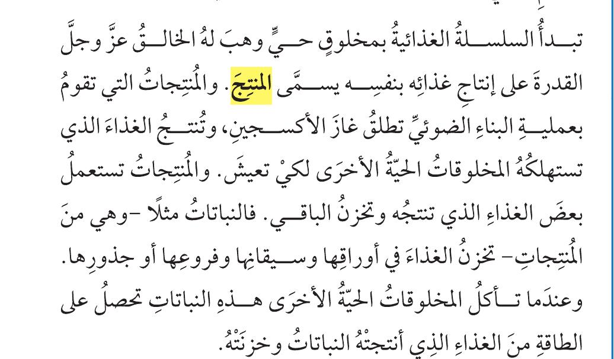
🔍 توضيح
المُنتِج يصنع غذاءه بعملية البناء الضوئي، ويُطلق الأكسجين.
يستعمل بعض الغذاء، ويخزّن الباقي في الأوراق والسيقان والجذور، فتأكله المخلوقات الأخرى وتأخذ طاقته.
يستعمل بعض الغذاء، ويخزّن الباقي في الأوراق والسيقان والجذور، فتأكله المخلوقات الأخرى وتأخذ طاقته.
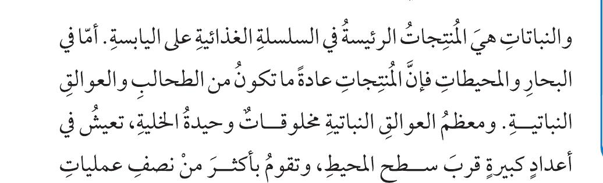
⚖️ انتبهي للفرق
| على اليابسة | في البحار والمحيطات |
|---|---|
| المنتجات الرئيسة: النباتات 🌿 | المنتجات: الطحالب والعوالق النباتية 🌊 |
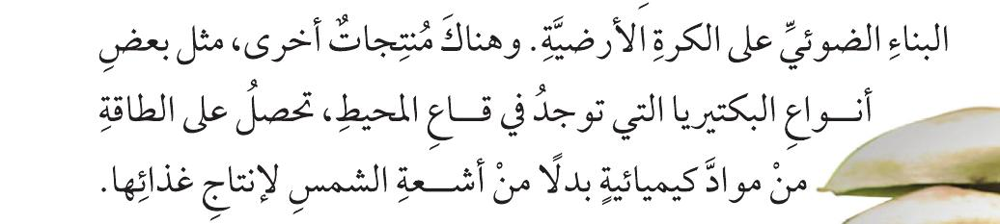
⚠️ فخ في الاختبار
ليست كل المنتجات تحتاج ضوء الشمس! بعض البكتيريا في قاع المحيط تصنع غذاءها من مواد كيميائية.
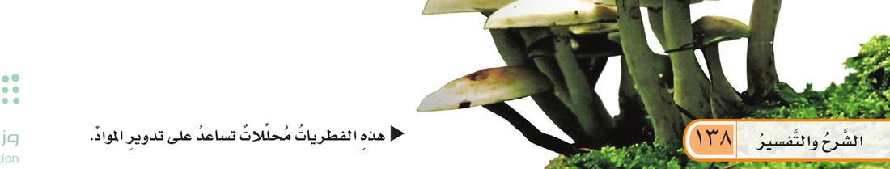
⚠️ فخ في الاختبار
الفطر 🍄 ينمو مثل النبات، لكنه ليس مُنتِجًا؛ فهو لا يصنع غذاءه.
الفطريات مُحلِّلات.
الفطريات مُحلِّلات.
صفحة ١٣٩
المستهلكات والمحللات
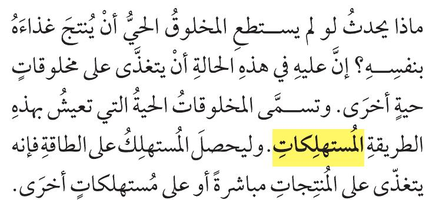
💡 الزبدة
المُستهلِك لا يصنع غذاءه، فيأكل المنتجات أو مستهلكات أخرى.

🔍 توضيح: ترتيب الحلقات
منتج←مستهلك أول←مستهلك ثانٍ←مستهلك ثالث
• الأول يأكل المنتجات: المواشي، الحشرات، الفئران، الفيلة.• الثاني يأكل المستهلك الأول: طيور تأكل الحشرات.
• الثالث يأكل المستهلك الثاني: الأفعى تأكل الطير.
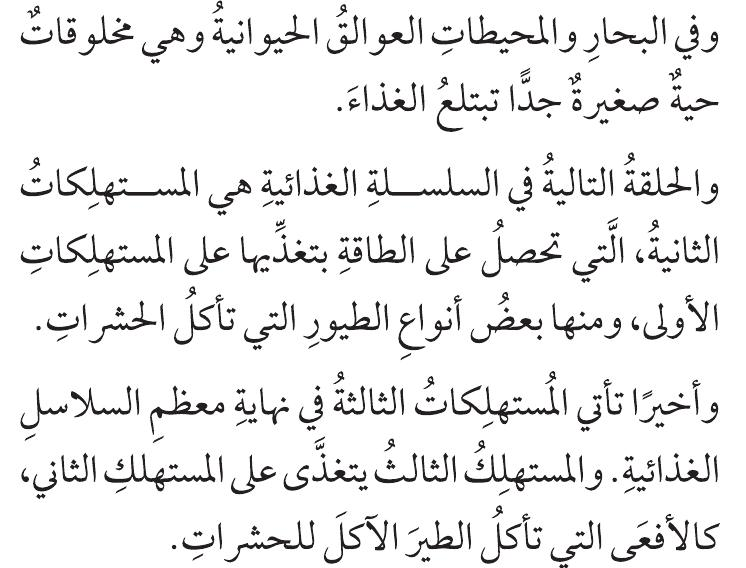
⚖️ انتبهي للفرق
| العوالق النباتية | العوالق الحيوانية |
|---|---|
| منتجات تصنع غذاءها | مستهلكات أولى تبتلع الغذاء |

💡 الزبدة
عدد المنتجات في النظام البيئي أكبر بكثير من عدد المستهلكات.

🔍 توضيح
المُحلِّل يحلل بقايا المخلوقات الميتة إلى مواد أبسط، فيُعيد تدوير المواد في البيئة ♻️.
أمثلته في الكتاب: الديدان والبكتيريا والفطريات.
أمثلته في الكتاب: الديدان والبكتيريا والفطريات.
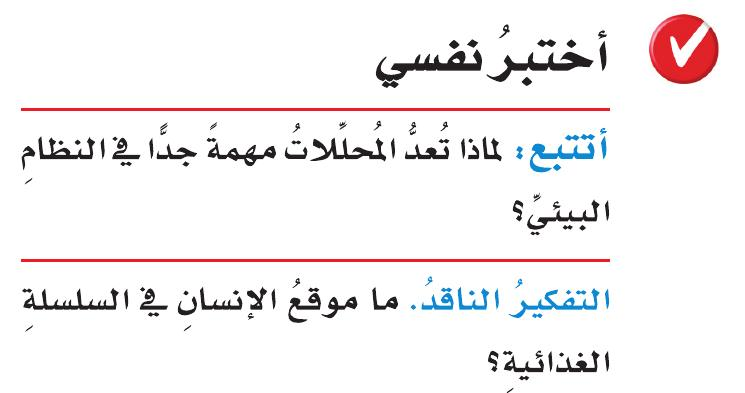
✍️ حلّ «أختبر نفسي»اضغطي لتري الإجابة
أتتبع: لأنها تعيد تدوير الطاقة والمواد من المخلوقات الميتة إلى البيئة.
التفكير الناقد: الإنسان مستهلك؛ فهو مستهلك أول حين يأكل النباتات، ومستهلك في مستوى أعلى حين يأكل اللحوم.
التفكير الناقد: الإنسان مستهلك؛ فهو مستهلك أول حين يأكل النباتات، ومستهلك في مستوى أعلى حين يأكل اللحوم.
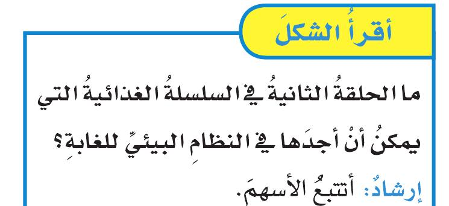

⚠️ فخ في الاختبار
السهم يتجه من المأكول إلى الآكل، أي في اتجاه انتقال الطاقة.
جندب ← ببغاء تعني: الببغاء يأكل الجندب، لا العكس.
جندب ← ببغاء تعني: الببغاء يأكل الجندب، لا العكس.
✍️ حلّ «أقرأ الشكل»اضغطي لتري الإجابة
الحلقة الثانية في سلسلة الغابة هي المستهلك الأول: الجندب 🦗.
صفحة ١٤٠
ما الشبكات الغذائية؟
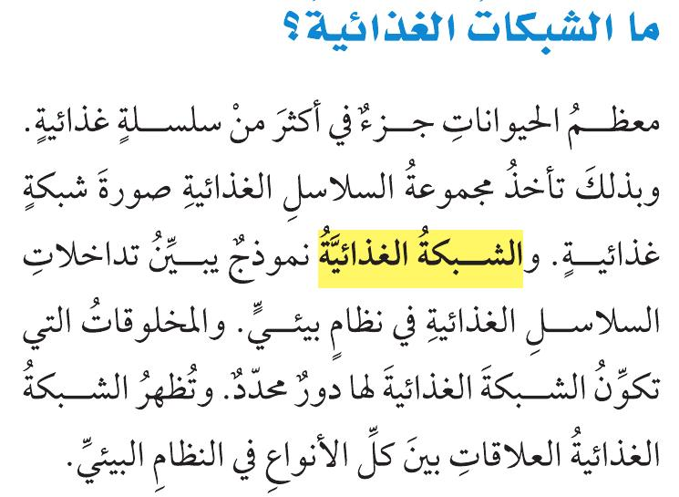
💡 الزبدة
الشبكة الغذائية = عدة سلاسل غذائية متداخلة.
هي أدق من السلسلة؛ لأن معظم الحيوانات تأكل أكثر من نوع.
هي أدق من السلسلة؛ لأن معظم الحيوانات تأكل أكثر من نوع.

🔍 توضيح: أسنان آكلات الأعشاب
آكلات الأعشاب مستهلكات أولى. أسنانها الأمامية حادة لقطع النبات، والخلفية مسطحة لطحنه ومضغه.
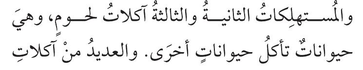
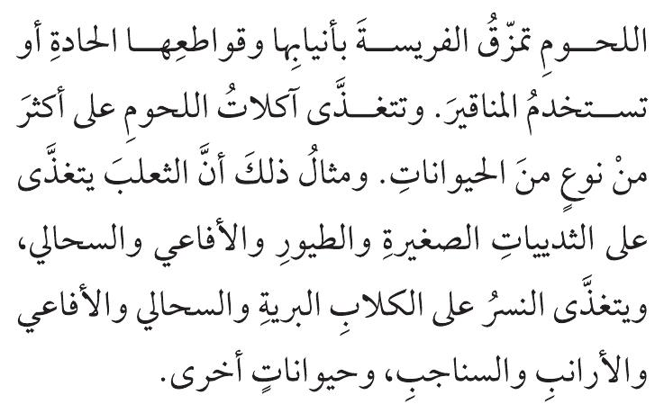
💡 الزبدة
آكلات اللحوم مستهلكات ثانية وثالثة، تمزق فريستها بالأنياب والقواطع الحادة أو بالمناقير.

⚖️ انتبهي للفرق
| آكلات أعشاب | آكلات لحوم | قارتة |
|---|---|---|
| نباتات فقط | حيوانات | نباتات وحيوانات |
| الغزال | الثعلب، النسر | الراكون |
🔍 توضيح
بعض الحيتان قارتة: تأخذ ماءً كثيرًا في فمها، ثم تصفّيه بتراكيب تشبه الأسنان، فيبقى فيها العوالق والقشريات الصغيرة.

💡 الزبدة
أي تغيّر في جزء من الشبكة يؤثر غالبًا في بقية أجزائها.

✍️ حلّ «أقرأ الصورة»اضغطي لتري الإجابة
المفترسات: الأفعى والنسر والنمر.
الفرائس: الحشرات والفأر والغزال، والأفعى أيضًا فريسة للنسر.
تذكّري: الحيوان الذي يخرج منه سهم إلى حيوان آخر هو فريسة له.
الفرائس: الحشرات والفأر والغزال، والأفعى أيضًا فريسة للنسر.
تذكّري: الحيوان الذي يخرج منه سهم إلى حيوان آخر هو فريسة له.
صفحة ١٤١
المفترسات والفرائس والكانسات
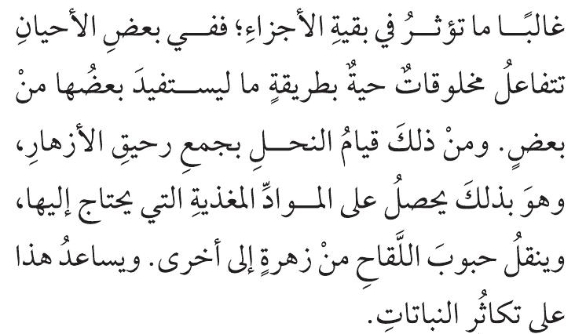
🔍 توضيح
النحلة 🐝 تجمع الرحيق فتحصل على غذائها، وتنقل حبوب اللقاح من زهرة إلى أخرى فتساعد النبات على التكاثر. كلاهما يستفيد.
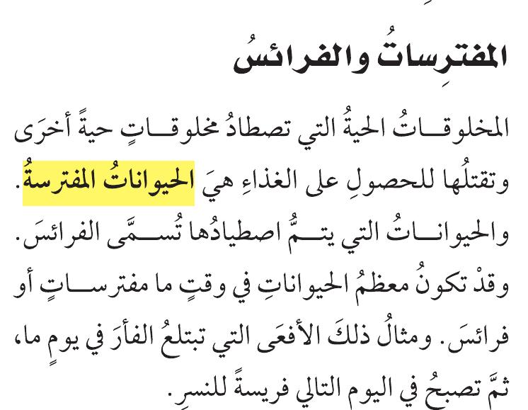
💡 الزبدة
المفترس يصطاد مخلوقًا حيًا ويقتله ليأكله، والفريسة هي الحيوان الذي يُصطاد.
⚠️ فخ في الاختبار
الحيوان الواحد قد يكون مفترسًا وفريسة!
الأفعى تبتلع الفأر (مفترس)، ثم يصطادها النسر (فريسة).
الأفعى تبتلع الفأر (مفترس)، ثم يصطادها النسر (فريسة).
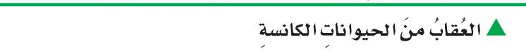
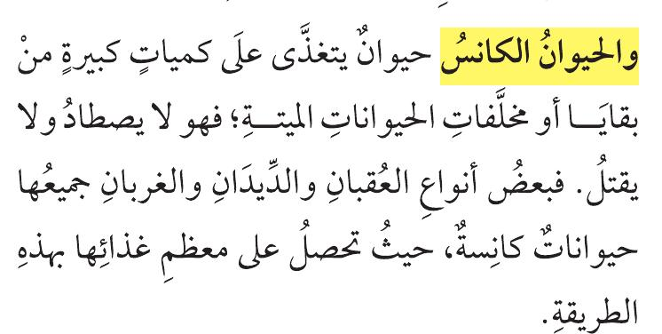
⚖️ انتبهي للفرق
| الكانس | المحلل |
|---|---|
| حيوان يأكل بقايا الحيوانات الميتة، ولا يصطاد | يحلل البقايا إلى مواد أبسط |
| بعض العقبان، الغربان | البكتيريا، الفطريات |
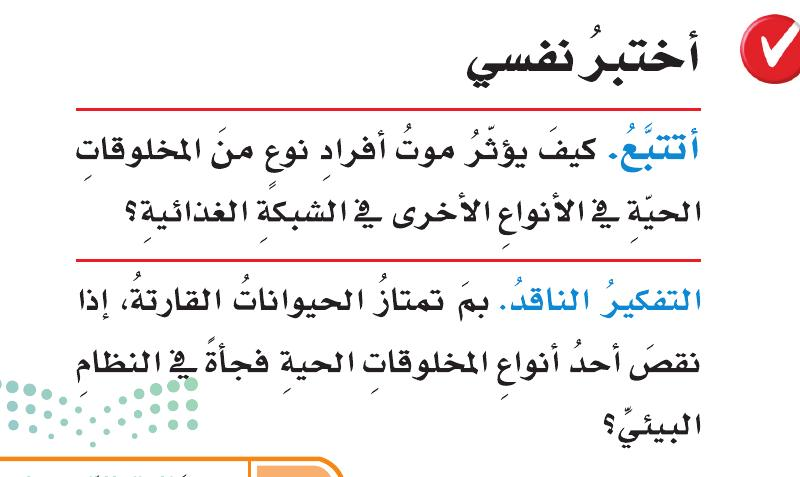
✍️ حلّ «أختبر نفسي»اضغطي لتري الإجابة
أتتبع: يتأثر من يأكل هذا النوع فيقلّ غذاؤه، ويتأثر ما يأكله هذا النوع فيزداد عدده.
التفكير الناقد: الحيوان القارت يأكل النباتات والحيوانات، فإذا نقص نوع وجد غذاءً آخر.
التفكير الناقد: الحيوان القارت يأكل النباتات والحيوانات، فإذا نقص نوع وجد غذاءً آخر.
صفحة ١٤٢
ما هرم الطاقة؟

💡 الزبدة
هرم الطاقة نموذج يبيّن كيف تنتقل الطاقة خلال سلسلة غذائية.
جزء من الطاقة يُستعمل داخل المخلوق، وجزء يُفقد على شكل حرارة 🔥.
جزء من الطاقة يُستعمل داخل المخلوق، وجزء يُفقد على شكل حرارة 🔥.
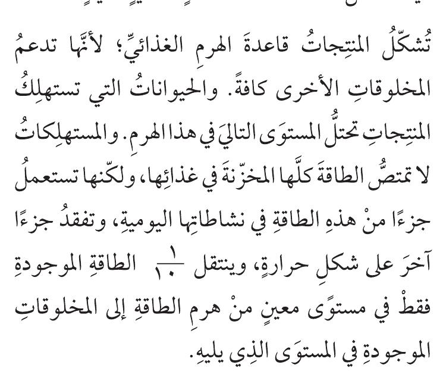
💡 الزبدة
قاعدة الهرم = المنتجات؛ لأنها تدعم كل المخلوقات الأخرى. وفوقها المستهلكات.
⚠️ قاعدة العُشر 🔢
ينتقل عُشر الطاقة فقط (١÷١٠) إلى المستوى التالي.
١٠٠٠٠←١٠٠٠←١٠٠←١٠
الحيلة: احذفي صفرًا واحدًا في كل صعود ⬆️.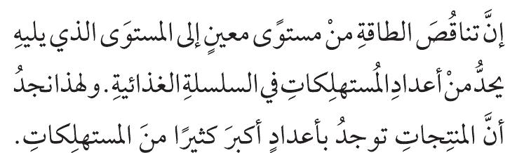
💡 الزبدة
لأن الطاقة تتناقص كلما صعدنا، تكون أعداد المنتجات أكبر من أعداد المستهلكات.

🔍 توضيح
إذا نقص الغذاء زاد التنافس بين المخلوقات عليه، فيقلّ عدد أفراد بعض الأنواع.

✍️ حلّ «أختبر نفسي»اضغطي لتري الإجابة
أتتبع: تبيّن كمية الطاقة التي تنتقل من مستوى إلى المستوى الذي يليه.
التفكير الناقد: يزداد التنافس على الغذاء، وقد يقلّ عدد أفراد بعض الأنواع.
التفكير الناقد: يزداد التنافس على الغذاء، وقد يقلّ عدد أفراد بعض الأنواع.
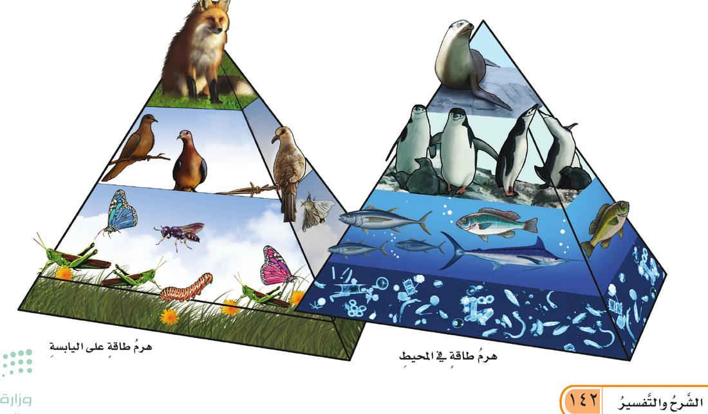
⚖️ انتبهي للفرق
| هرم اليابسة | هرم المحيط |
|---|---|
| أعشاب | عوالق |
| حشرات | أسماك |
| طيور | بطاريق |
| ثعلب (القمة) | فقمة (القمة) |
📌 خلاصة الدرس
🗺️ خريطة المفاهيم
☀️ الشمسمصدر الطاقة الأول
⬇
🌿 المنتجاتتصنع غذاءها بالبناء الضوئي
نباتات · طحالب · عوالق نباتية
نباتات · طحالب · عوالق نباتية
⬇تأكلها
🦗 المستهلكاتأول ← ثانٍ ← ثالث
⬇بعد موتها
🍄 المحللاتتحلل البقايا وتعيد تدوير المواد
بكتيريا · فطريات · ديدان
بكتيريا · فطريات · ديدان
المستهلكات حسب غذائها
- آكلات أعشاب (مستهلك أول)
- آكلات لحوم (ثانٍ وثالث)
- قارتة: نبات وحيوان
حسب طريقة حصولها عليه
- مفترس: يصطاد ويقتل
- فريسة: يُصطاد
- كانس: يأكل البقايا
⬇نمثّل انتقال الطاقة بـ
⛓️ السلسلةمسار واحد
🕸️ الشبكةسلاسل متداخلة
🔺 الهرمكمية الطاقة
⚖️ لا تخلطي بينها
| ⛓️ السلسلة | 🕸️ الشبكة | 🔺 الهرم | |
|---|---|---|---|
| ماذا يبيّن؟ | مسار الطاقة من مخلوق إلى آخر | تداخل السلاسل في النظام البيئي | كيف تتناقص الطاقة من مستوى إلى آخر |
| ميزته | بسيط وسهل التتبع | أدق؛ لأن الحيوان يأكل أكثر من نوع | يفسّر كثرة المنتجات |
| 🐍 المفترس | 🦅 الكانس | 🍄 المحلل | |
|---|---|---|---|
| غذاؤه | حيوانات حية يصطادها | بقايا الحيوانات الميتة | بقايا المخلوقات الميتة |
| هل يقتل؟ | نعم | لا | لا |
| أمثلة | الأفعى، النمر | بعض العقبان، الغربان | البكتيريا، الفطريات |
✨ الملخص في خمس نقاط
- مصدر الطاقة الأول هو الشمس، وتأخذها المنتجات لتصنع غذاءها.
- تنتقل الطاقة: منتج ← مستهلك أول ← مستهلك ثانٍ ← مستهلك ثالث، والمحللات تعيد تدوير المواد.
- السلسلة مسار واحد، والشبكة سلاسل متداخلة وهي أدق.
- المستهلكات: آكلات أعشاب، وآكلات لحوم، وقارتة. ومنها المفترس والكانس.
- في هرم الطاقة ينتقل العُشر فقط، لذلك المنتجات أكثر عددًا في القاعدة.
🧠 اختبري نفسك
١في السلسلة: أعشاب ← جندب ← ببغاء ← أسد الجبال، ما المستهلك الثاني؟اضغطي لتري الإجابة
الببغاء؛ لأنه يأكل الجندب (المستهلك الأول).
٢في مستوى المنتجات ٢٠٠٠٠ وحدة طاقة. كم يصل إلى المستهلك الأول؟ وكم يصل إلى المستهلك الثاني؟اضغطي لتري الإجابة
المستهلك الأول ٢٠٠٠، والمستهلك الثاني ٢٠٠. (احذفي صفرًا في كل مستوى)
٣صوابٌ أم خطأ؟ الحيوان الكانس يصطاد فريسته ويقتلها.اضغطي لتري الإجابة
خطأ؛ الكانس يأكل بقايا الحيوانات الميتة ولا يصطاد. الذي يصطاد هو المفترس.
٤لماذا تكون أعداد المنتجات أكبر من أعداد المستهلكات؟اضغطي لتري الإجابة
لأن الطاقة تتناقص من مستوى إلى الذي يليه، فلا تكفي إلا أعدادًا أقل في المستويات العليا.
المعلمة عبير الخماش · مجمع الفيضة التعليمي